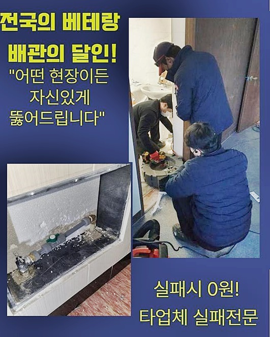
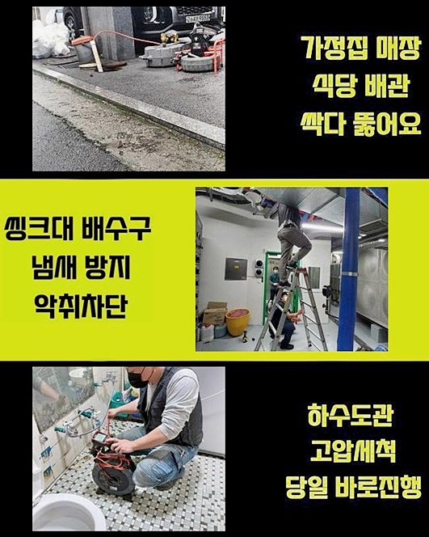
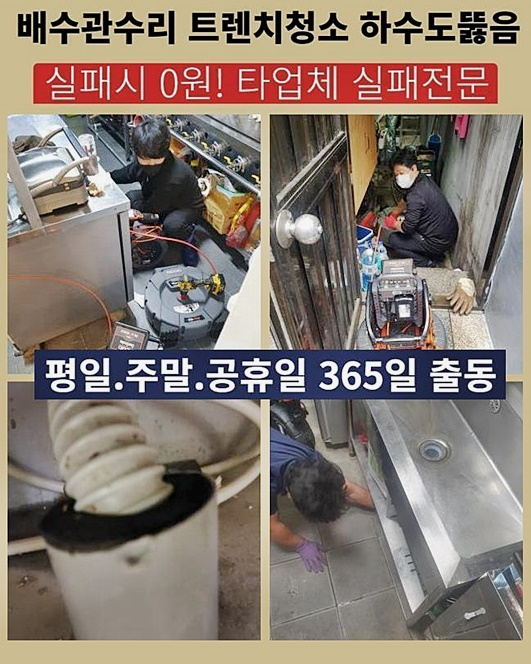
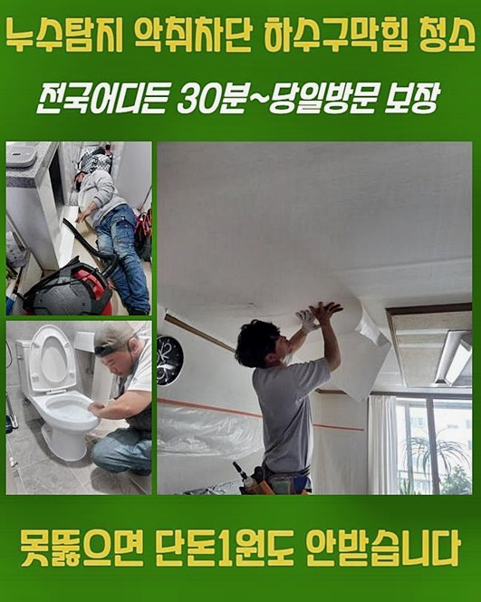
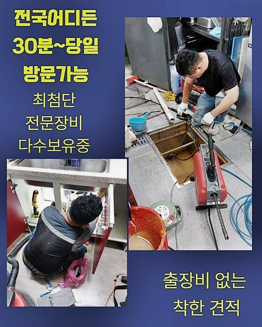
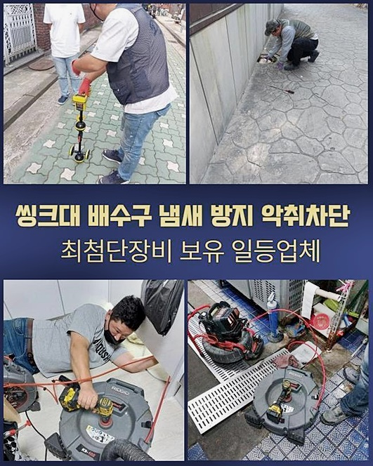
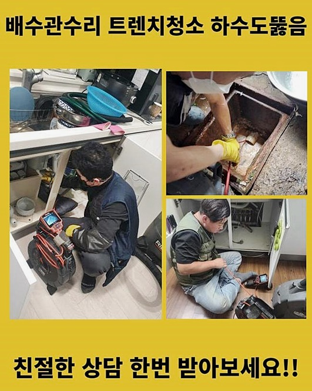

🏠 인천 원창동하수구뚫음 검암경서동 하수구뚫는비용 누수탐지공사
용인시 처인구 배관막힘 전문 시공 후기

📋 작업 개요
- 위치: 용인시 처인구, 수원시 영통구, 화성시 동탄
- 서비스 유형: 배관막힘, 누수수리, 고압세척
- 작업 일시:
- 업체명: 하수구수사대 (010-5615-2118)
🔍 문제 상황
인천 원창동하수구뚫음 검암경서동 하수구뚫는비용 누수탐지공사
욕실 구조는 집안에서 설립된 장소 가운데 다량의 생활용수를 이용하는 장소입니다
안을 관찰해 보면 변기나 바닥 하수관 세면대와 물을 받는 욕조처럼 수돗물이 나오는 구조물이 깔려있다는 사실을 인지할 수 있어요
여러 시설들이 모인 욕실의 내측에서는 하수구가 틀어막히는 해프닝들도 쉽게 생성될 수 있는 영역이라고 볼 수 있죠!
생활을 영위하시다가 배수가 끊긴 이후로 나아질 기미가 없어서 수선을 요청해 주셨습니다
장소에 도착한 뒤 욕실 쪽의 문제점부터 분석을 해봤더니 뿌연 하수가 배관으로 아예 이동하지 못한 채 찰랑대고 있었네요
손을 씻고 날 때 마다 배수가 천천히 이뤄지는 변화를 감지했는데 작동이 멈춘 채 물이 고여버린 지는 채 오래되지 않은 증세라고 알려주셨어요
세면기의 경우에는 씻으면서 때라거나 모발과 같은 노폐물이 빠져버려 통로가 봉쇄될 상황이 빈번합니다
화장실에 진입하는 것도 한계가 있는 부분이어서 빠르게 물의 막힘을 해소하기 위한 작업에 뛰어들게 됐네요
본질적으로 장치를 작동하지는 않고 내면의 상태와 모습부터 세부적으로 관측하면서 처리 방향을 설립합니다
세면 구조물과 이어져있는 파이프가 벽 안으로 들어간 구조였습니다

🔎 원인 분석
💡 전문가 진단: 정밀 진단 장비를 사용하여 슬러지의 고착 여부를 판명하고 타격/세척 작업을 실시했습니다.
그런 사유로 바깥에는 배수관이 뚜렷하게 인식되지는 않았기에 마감재를 제하는 굴착이나 추가적인 조치가 추가되기도 한다는 사실을 넌지시 알려드렸습니다
건물별로 파이프라인이나 내부 구조의 성질은 다른 양상을 띱니다
근래에 건설이 된 신축 아파트 케이스는 배관자재가 깊숙한 영역에 묻혀있을 떄가 많은데 불쾌한 악취도 줄일 수 있고 외관상으로도 매력적이고 깔끔하고 좋아보여서 선호합니다
어떤 오류가 내장됐는지를 판가름을 해보려면 우선은 세면대 부속품을 먼저 해체 작업을 진행한 이후에 디테일한 검토를 해보겠습니다
방문드린 해당 장소는 건물이 유지된 역사가 상당히 오래됐다 싶은 현장은 아니었으므로 배관라인 컨디션이 딱히 부실하지는 않았습니다!
빌딩이 수립된 지가 까마득한 수준이라면 세면대 파츠도 동반하여 낡아버렸을테니 센 물살이 나가는 것만으로도 겉부분의 마개까지도 부서지고 이탈되는 경우도 있어요
물길이 트이지 않은 증상이 한참 지났다면 같이 조립된 부속품들이 다치기 좋은 환경으로 진행될 수 있습니다
내측에 끼인 물질에 따라서 충분한 변수는 있지만 끈적한 기름 때들로 정체되고 있는 곳이라면 폐기되지 못하고 고인 채로 썩으면서 굉장한 퀴퀴한 냄새까지 나타납니다!
함부로 건들지 않아야 하며 파이프가 생긴 꼴에 따라서 별도의 조치가 들어가야할 수 있으니 문제가 없을만큼 철저한 진단을 이어가야 합니다
구조의 특성을 판단해 보니 알파벳 P자로 꺾인 모양으로 형성되어 있었기에 고객님의 댁 안에서 조치를 취할 수가 없다면 인접한 주민의 동의를 받아 천장부를 떼내는 것이 불가피할 수 있어요
웬만하면 한 세대 안쪽에서 전적으로 매듭을 지을 수 있도록 열성을 다할 것이며 상황에 대한 판단을 하기 위해 검색 장치를 활용해서 관찰해 보도록 하겠습니다

🔧 작업 과정
세면기 똑딱이 버튼을 꺼내보니 상당량의 오염 인자들이 두툼하게 쌓여있었습니다
클렌징을 하는 과정에서 배출된 각질층과 세정제의 일부가 속으로 떨어져 버리면서 물길이 차단된 거였습니다
세면대뚜껑 표면에 이물질이 강하게 결착하면 낄끔하게 신규 제품으로 교환하거나 부속품만 청소해 줘도 물의 이동성이 확보됩니다
세면기의 수도물이 원활하게 흐르지 못하는 측면은 세면대팝업의 하단부에서 폐쇄되었거나 혹은 수도관로까지 오염되어 버린 경우로 분할할 수 있습니다
표면에서 더 깊은 곳까지 장애 인자가 자리잡은 상태로 보였으므로 예리한 도구로 긁어내는 것이 반드시 필요하다 생각됐어요
접근경로가 충분히 나와서 천장 방면으로 뚫어야 할 상황까지는 불필요했고 머무른 장소 내에서 관리해주는 작업으로도 가뿐하게 봉쇄된 측면이 풀려나갈 것이라는 추정되었습니다
실제로 착공을 해 보아야 확정할 수 있지만 초기단계에서 스캔한 형상으로는 한 세대 안에서 통수가 이뤄질 것 같았네요
알아낸 결론은 의뢰인분과 바로바로 일일이 보고를 드립니다!
세부적인 배관청소 기기로 하수라인의 정체를 생성하는 이물질을 소거시켜야 합니다
오염원의 농도가 어마어마했으므로 꽤나 수차례 반복해야 했어요
현장 조건별로 작업 시간은 약간씩 변화하는 게 일반적입니다
다량의 오염원이 집적되어 말라붙어있거나 양이 과도하게 쌓여있다면 투입되는 시간이 확충될 때도 있습니다
순차적으로 표면부터 붙어있는 오염원을 차례로 집중하여 소거해 나가면 결국 깨끗해 집니다
샤프트 장치와 배관전용 카메라는 유연하고 가느다란 튜브로 조성되어 있으므로 같이 투입되며 상황을 추적해 나가면서 세부적인 세척이 이뤄지게 돼요
얼만큼 소강이 되었는지 끊임없이 관찰하면서 대응할 수 있기 때문에 꽉 막혀버린 상황을 편리하고 정확하게 세정하게 되는 겁니다
하수구진행의 어려움을 촉발시키던 전적인 불순물이 척결된 모습입니다!
파이프 내부는 이제 가로막는 물질들이 몽땅 정리가 되었으니 고여있던 물도 거침없이 배수되어 버립니다
청소를 끝내고 마지막으로 물을 받아 내려보내보며 결과의 품질이 괜찮은지를 반복적으로 검사해 준 후에 퇴근을 하게 되며 향후 재발하는 막힘 문제가 나타나게 된다면 사후 처리까지도 철저하게 보장하고 있답니다


✅ 작업 완료
작업했던 장소의 주변부에 때가 많이 껴 있고 부식된 곳이 있어서 전용세제로 닦고나서 종료를 선언합니다
현장의 조건에 따라 수행하는 내용에 변동이 있으니 저희 업체는 작업전에 책정된 가격을 제시해 드리긴 곤란해요
직접 내방하여 내부 구조까지 카메라를 넣어 어떤 방식이 효율적일지 경로를 결정한 이후에 지불하셔야 할 최종금액을 지정할 수 있습니다
문의사항이 있으시다면 방문드린 이후에도 여러가지 물어보셔도 돼요
숙련된 배관공이 어떤 과정을 수행하는 중인지 설명을 추가해 드리며 내부에 설립된 시설물의 비정상적인 면이 노출되고 담당한 배관 이외의 이슈가 도래하게 되더라도에도 추가적인 작업에도 돌입할 수 있으니 마음을 놓으셔도 됩니다




⚠️ 하수구 배관 막힘 예방 및 관리 가이드
- ✅ 머리카락, 비닐, 물티슈 등 물에 분해되지 않는 이물질은 절대 흘려보내지 마세요.
- ✅ 기름기 많은 식기는 설거지 전 키친타올로 먼저 기름때를 닦아내세요.
- ✅ 주기적으로 배수구에 뜨거운 물을 가득 부어주어 유지방 고착을 방지하세요.
- ✅ 작업 후 1년 이내 재발 시 무상 A/S 보증 서비스를 제공합니다.
💡 핵심 정리
- 확실한 장비 작업(내시경 점검 및 샤프트 스케일링)으로 원인을 뿌리 뽑습니다.
- 작업 후 1년 이내에 동일한 부위 재발 시 100% 무상 A/S 서비스를 보장합니다.
- 서울 · 경기 · 인천 전 지역에 24시간 언제든 긴급 출동할 수 있도록 항시 대기 중입니다.
❓ 자주 묻는 질문 (FAQ)
🚨 용인시 처인구 배관막힘 문제로 고민이신가요?
정확한 원인 진단과 확실한 시공으로 재발 없는 해결을 약속드립니다.
24시간 긴급 출동 | 서울 · 경기 · 인천 전지역 | 1년 내 재발 시 무상 A/S